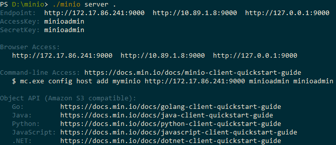

6. Leverage File Service S3 for on-premises storage¶
SystemLink File Service allows you to configure and use the Amazon S3 cloud storage instead of a file share. The File Service will also work with MinIO, a server-side software storage stack that is compatible with Amazon S3.
You can configure and use an on-premises MinIO server. Due to limitations, however, connecting to GCS or Azure using the MinIO gateway is unsupported.
To use MinIO with SystemLink, you need SystemLink version 2020 R3 or later.
To use MinIO as a storage provider, set up the MinIO server on a system that you would like to upload files to. This can be the same machine as the SystemLink server or your own dedicated server. Then, configure the File Service to use that server.
Run the following command to start the server with individual access and secret keys:
set MINIO_ACCESS_KEY=YourAccessKeyset MINIO_SECRET_KEY=YourSecretKeyminioserverC:\minio

Running a minio server.
When starting the MinIO server for the first time, use a web browser and navigate to the URL that the command line prints out. Create a bucket by clicking the + button in the right bottom corner.
Keep the command line open to keep the MinIO server running.
For detailed information on how to run the server, follow the instructions from the MinIO Quickstart guide.
In the NI SystemLink Server Configuration dialog, go to the NI SystemLink Service Manager tab and click Restart to apply the settings you made in the JSON file.